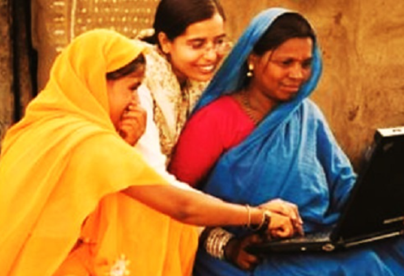

A natural disaster is a major adverse event resulting from natural processes of the Earth; examples are floods,
hurricanes,
tornadoes, volcanic eruptions, earthquakes, tsunamis, storms, and other geologic processes. A natural disaster
can cause loss
of life or damage property, and typically leaves some economic damage in its wake, the severity of which depends
on the
affected population's resilience (ability to recover) and also on the infrastructure available.
A landslide is described as an outward and downward slope movement of an abundance of slope-forming materials including rock,
soil, artificial, or even a combination of these things.
During World War I, an estimated 40,000 to 80,000 soldiers died as a result of avalanches during the mountain campaign in the
Alps at the Austrian-Italian front. Many of the avalanches were caused by artillery fire.
An earthquake is the result of a sudden release of energy in the Earth's crust that creates seismic waves. At the Earth's
surface, earthquakes manifest themselves by vibration, shaking, and sometimes displacement of the ground. Earthquakes are
caused by slippage within geological faults. The underground point of origin of the earthquake is called the seismic focus.
The point directly above the focus on the surface is called the epicenter. Earthquakes by themselves rarely kill people or
wildlife. It is usually the secondary events that they trigger such as building collapse, fires, tsunamis (seismic sea waves)
and volcanoes. Many of these could possibly be avoided by better construction, safety systems, early warning and planning.
When natural erosion, human mining or underground excavation makes the ground too weak to support the structures built on it,
the ground can collapse and produce a sinkhole. For example, the 2010 Guatemala City sinkhole, which killed fifteen people, was
caused when heavy rain from Tropical Storm Agatha, diverted by leaking pipes into a pumice bedrock, led to the sudden collapse
of the ground beneath a factory building.
Volcanoes rated at 8 (the highest level) on the Volcanic Explosivity Index are known as supervolcanoes. According to the Toba
catastrophe theory, 75,000 to 80,000 years ago a supervolcanic eruption at what is now Lake Toba in Sumatra reduced the human
population to 10,000 or even 1,000 breeding pairs, creating a bottleneck in human evolution,[8] and killed three-quarters of
all plant life in the northern hemisphere. However, there is considerable debate regarding the veracity of this theory.
The main danger from a supervolcano is the immense cloud of ash, which has a disastrous global effect on climate and
temperature for many years.
We raise funds for such natural calamities like floods, droughts, famines, earthquakes, tsunamis etc.
You can't reach the needy, but your help can. We work on providing food and other daily essentials in such
situations.
Every little donation means alot, and has the power to bring change to someone's life.
MEDICAL AID
Medical aids provide funds to the needy, poor and other people who cannot afford the expenses of medication.
In today's world the average cost for a transplant or a surgery goes upto lakhs of rupees. The purpose of this
fundraiser
is to make this world a better place where facilities are available to everyone irrespective of their
economic status.
During these times, where a pandemic is going on, a lot of people are in Economic debts, the economy of the
country
has taken a downfall. Raising funds for COVID 19 has become a necessity. We are constantly in touch with
Covid-19
centres and hospitals to provide immediate financial grants to the patients.
It is heartening to see how the healthcare sector in India has advanced in recent years. You can now get the best medical
care for several chronic ailments. Cities such as Chennai and Mumbai have become a sought-after hub for medical tourism.
People, from far and wide, arrive here for availing medical treatment. Despite these positive developments, healthcare continues
to be expensive for lakhs of Indian families belonging to the middle class. The cost of healthcare in India, particularly in
private hospitals is on the higher side.
The awareness about health insurance is not much. Many families pay their medical bills with their hard-earned savings.
This further increases their burden as out-of-pocket expenses create financial problems in the future. While healthcare is
improving, there is a rise in the number of ailments, such as diabetes, hypertension, and cardiovascular
diseases. An unhealthy lifestyle is among the leading factors that have been attributed to such illnesses. Heart diseases,
which also occur due to hereditary reasons, often require long-term treatment. Buying health insurance for heart ailment will
help you get cover for various medical expenses, including pre-and-post hospitalisation medical expenses and ambulance costs.
Treatment procedures for heart ailments such as coronary bypass surgery and angioplasty can cost up to Rs 3 lakh on an average.
The cost of medical treatment in India is quite high, and it varies depending on the city. There are leading hospitals in the
country, with state-of-the-art facilities and qualified medical professionals, which offer quality medical care for various
illnesses. Certain common medical procedures in India can cost up to lakhs of rupees. For instance, cataract eye surgery is
a surgery conducted for the removal of cataract – a protein mass that builds up in the eye - usually in elderly people.
The cost of this surgery can range anywhere between Rs 8,000 to Rs 1,80,000. Similarly, dialysis for patients with kidney
disease can cost up to Rs 1,000 per session especially in metro cities. This may lead to a lot of expenditure.
We wish and request you to please support this cause.
NGOs

A non-governmental organization (NGO) is a non-profit group that functions independently of any government. NGOs,
sometimes called civil societies, are organized on community, national and international levels to serve a social or
political goal such as humanitarian causes or the environment.
Organizations which are independent of government involvement are known as non-governmental organizations or NGOs or
non-government organizations. NGOs are a subgroup of organizations founded by citizens, which include clubs and associations
which provide services to its members and others. They are usually nonprofit organizations. Many NGOs are active in
humanitarianism or the social sciences. Surveys indicate that NGOs have a high degree of public trust, which can make them a
useful proxy for the concerns of society and stakeholders. However, NGOs can also be lobby groups for corporations,
such as the World Economic Forum. According to NGO.org "[an NGO is] any non-profit, voluntary citizens' group which is
organized on a local, national or international level ... Task-oriented and driven by people with a common interest,
NGOs perform a variety of service and humanitarian functions, bring citizen concerns to Governments, advocate and monitor
policies and encourage political participation through provision of information."
India is estimated to have had about two million NGOs in 2009 (approximately one per 600 Indians), many more than the
number of the country's primary schools and health centers. The term "NGO" is used inconsistently; it is sometimes a
synonym for a civil society organization, any association founded by citizens. NGOs are known in some countries as
nonprofit organizations, and political parties and trade unions are sometimes considered NGOs. NGOs are classified by
orientation and level of operation; orientation refers to the type of activities an NGO undertakes. Activities may include
human rights, consumer protection, environmentalism, health, or development. An NGO's level of operation indicates the scale
at which an organization works: local, regional, national, or international.
We fund multiple Ngos for providing free food to the poor, organize workshops and seminars on women development etc,
working for old age homes and visiting orphanages are the main areas where our Ngos work.
EDUCATION
Education is a very important factor in the economic development of any country. India since the early days of independence
has always focused on improving the literacy rate in our country. Even today the government runs many programs to promote
Primary and Higher Education in India.
Human Capital and Economic Growth stay hand in hand together, keeping an eye on the development of the country.
Long back the Indians recognized the importance of human capital. The seventh five-year plan dictates, “Human resources
development has necessarily to be assigned a key role in any development strategy, particularly in a country with a large
population”.
Education in India means the process of teaching, learning, and training of human capital in schools and colleges.
This improves and increases knowledge and results in skill development hence enhancing the quality of the human capital.
Our government has always valued the importance of education in India and this is reflected in our economic policies.
There are two areas where government expresses there expenditure.
As a percentage of total government expenditure.
As a percentage of Gross Domestic Product (GDP).
The percentage of expenditure on education out of total government expenditure is the indicator of the importance of education
in the scheme of expenses before the government. The commitment level towards the development of education in our country can
be shown by the percentage of expenditure done on education out of total GDP.
During 1952-2010, the percentage of total education expenditure out of total government expenditure increased from 7.92% to
11.10%. At the same time, the percentage of GDP of the country increased from 0.64% to 3.25%. As the expenditure on education
was not constant during that time, the growth of country was irregular in that era.